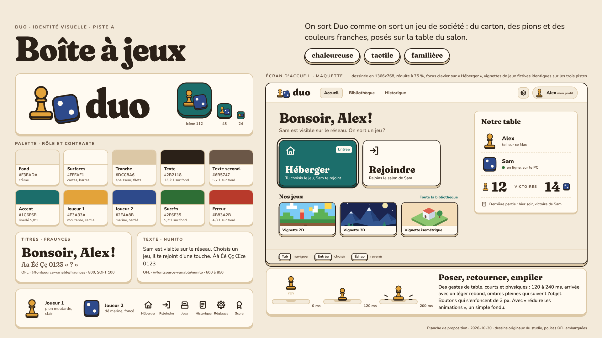
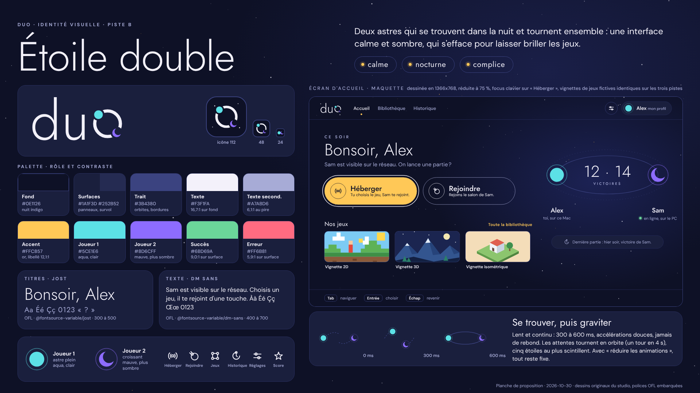
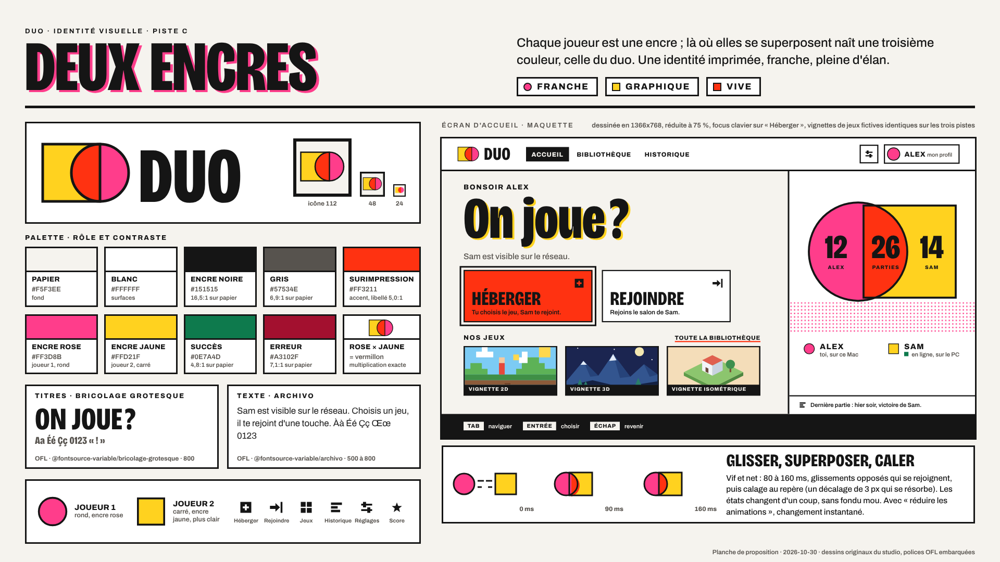

Duo · trois pistes d'identité visuelle · planches complètes dans design/identite/piste-a.png, piste-b.png, piste-c.png

A · Boîte à jeuxchaleureuse, tactile, familière · clair, carton et pions

B · Étoile doublecalme, nocturne, complice · sombre, traits fins et astres

C · Deux encresfranche, graphique, vive · papier, noir et deux encres